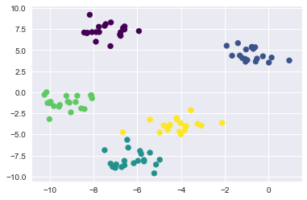
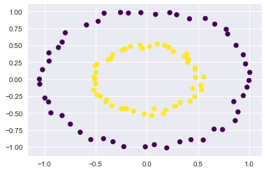
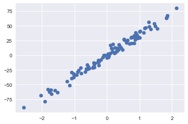
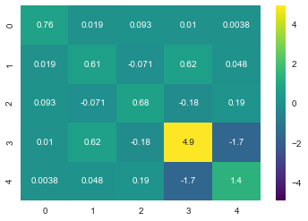

Scikit-learn has a number of methods to generate data in its datasets module. Below are some examples of the options available.
```python
import seaborn as sns import matplotlib.pyplot as plt import pandas as pd %matplotlib inline ```
```python from sklearn.datasets import make_blobs
blob_data, blob_labels = make_blobs(n_samples=100, n_features=2, centers=5, cluster_std=.8)
plt.scatter(blob_data[:,0], blob_data[:,1], c = blob_labels, cmap='viridis'); ```

python
blob_df = pd.DataFrame({'x':blob_data[:,0],'y':blob_data[:,1],'Label':blob_labels})
blob_df.head(2)
| Label | x | y | |
|---|---|---|---|
| 0 | 1 | -0.530153 | 3.996292 |
| 1 | 4 | -4.974868 | -4.763579 |
Create one circle inside of another one.
```python from sklearn.datasets import make_circles
circles_data, circles_labels = make_circles(n_samples=100, noise=.03, factor=.5)
plt.scatter(circles_data[:,0], circles_data[:,1], c = circles_labels, cmap='viridis'); ```

python
circles_df = pd.DataFrame({'x':circles_data[:,0],'y':circles_data[:,1],'Class':circles_labels})
circles_df.head(2)
| Class | x | y | |
|---|---|---|---|
| 0 | 0 | 0.964222 | 0.223756 |
| 1 | 0 | 0.775693 | 0.734270 |
```python from sklearn.datasets import make_regression
regression_data, regression_values = make_regression(n_samples=100, n_features=1, n_informative=1, noise=5)
plt.scatter(regression_data[:,0], regression_values, cmap='viridis'); ```

python
regression_df = pd.DataFrame({'Feature 1':regression_data[:,0],'Value':regression_values})
regression_df.head(2)
| Feature 1 | Value | |
|---|---|---|
| 0 | 0.523895 | 26.287656 |
| 1 | 0.365088 | 17.644997 |
```python from sklearn.datasets import make_biclusters
biclusters_data, biclusters_rows, biclusters_cols = make_biclusters(shape = (100,2), n_clusters=2)
biclusters_df = pd.DataFrame({'x':biclusters_data[:,0], 'y':biclusters_data[:,1], 'Row Class 1':biclusters_rows[0], 'Row Class 2':biclusters_rows[1]}) biclusters_df.head(2) ```
| Row Class 1 | Row Class 2 | x | y | |
|---|---|---|---|---|
| 0 | True | False | 80.816475 | 80.816475 |
| 1 | True | False | 80.816475 | 80.816475 |
python
biclusters_cols
array([[ True, True],
[False, False]], dtype=bool)
```python from sklearn.datasets import make_classification
classification_data, classification_class = make_classification(n_samples=100, n_features=4, n_informative=3, n_redundant=1, n_classes=3)
classification_df = pd.DataFrame({'Feature 1':classification_data[:,0], 'Feature 2':classification_data[:,1], 'Feature 3':classification_data[:,2], 'Feature 4':classification_data[:,3], 'Class':classification_class}) classification_df.head(2) ```
| Class | Feature 1 | Feature 2 | Feature 3 | Feature 4 | |
|---|---|---|---|---|---|
| 0 | 1 | 3.062990 | 0.117025 | 4.274497 | 2.940409 |
| 1 | 1 | 2.680943 | -0.492702 | 3.652454 | 1.894190 |
```python from sklearn.datasets import make_multilabel_classification
multilabel_classification_data, multilabel_classification_classes = make_multilabel_classification(n_samples=100, n_features=4, n_classes=2, n_labels=2)
multilabel_classification_df = pd.DataFrame({'Feature 1':multilabel_classification_data[:,0], 'Feature 2':multilabel_classification_data[:,1], 'Feature 3':multilabel_classification_data[:,2], 'Feature 4':multilabel_classification_data[:,3], 'Class 1':multilabel_classification_classes[:,0], 'Class 2':multilabel_classification_classes[:,1]}) multilabel_classification_df.head(2) ```
| Class 1 | Class 2 | Feature 1 | Feature 2 | Feature 3 | Feature 4 | |
|---|---|---|---|---|---|---|
| 0 | 1 | 0 | 19.0 | 20.0 | 4.0 | 1.0 |
| 1 | 1 | 1 | 21.0 | 14.0 | 3.0 | 7.0 |
```python from sklearn.datasets import make_moons
moons_data, moons_labels = make_moons(n_samples=100,noise=0)
plt.scatter(moons_data[:,0], moons_data[:,1], c=moons_labels, cmap='viridis'); ```
```python from sklearn.datasets import make_spd_matrix
spd_matrix = make_spd_matrix(n_dim=5)
sns.heatmap(data=spd_matrix, annot=True, cmap='viridis'); ```

python
pd.DataFrame(spd_matrix)
| 0 | 1 | 2 | 3 | 4 | |
|---|---|---|---|---|---|
| 0 | 0.758847 | 0.019034 | 0.092914 | 0.010491 | 0.003805 |
| 1 | 0.019034 | 0.614790 | -0.070875 | 0.620051 | 0.048334 |
| 2 | 0.092914 | -0.070875 | 0.678010 | -0.178302 | 0.189515 |
| 3 | 0.010491 | 0.620051 | -0.178302 | 4.917203 | -1.715514 |
| 4 | 0.003805 | 0.048334 | 0.189515 | -1.715514 | 1.408395 |